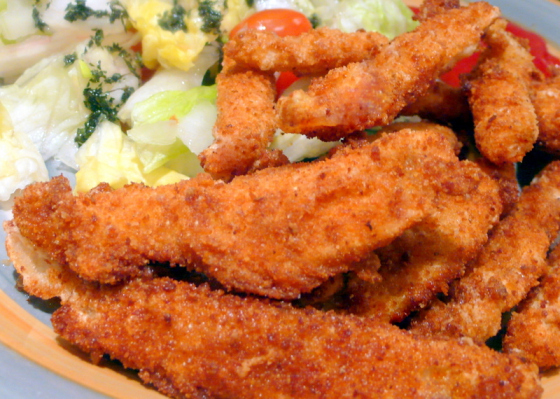

Crispy Tilapia Sticks Recipe

Crispy Tilapia Sticks is a delicious crispy flavorful tilapia fillet dish. The fish is seasoned and dredged in a beading of Panko breadcrumbs, then deep fried until crispy. Crispy Tilapia Sticks makes a delicious appetizer and I think that it goes well with fresh homemade ranch dressing.
Preparation Time: 10 mins.
Cooking Time: 15 mins.
Total Time: 25 mins.
Ingredients
- 1 lb. thick tilapia fillet. each piece sliced lengthwise into 3 to 4 pieces
- 1/2 teaspoon garlic powder
- 1/2 teaspoon onion powder
- 1 teaspoon sea salt
- 1/4 teaspoon ground black pepper
- 2 eggs beaten
- 1 cup Panko breadcrumbs
- 2 cups cooking oil
Instructions
- Combine the salt, garlic powder, onion powder, and ground black pepper in a bowl mix well.
- Rub the mixture all over the sliced tilapia fillets.
- Meanwhile, pour the oil in a deep cooking pot. Turn-on the heat and start to heat-up the oil.
- Dip the tilapia fillet in the bowl with beaten egg then dredge the tilapia in Panko breadcrumbs. ake sure that the tilapia is well coated. To save more breadcrumbs and for better coating, you can place the breadcrumbs in a container with cover. Simply put 2 to 3 pieces if tilapia fillet in the container with breadcrumbs, cover it, and then shake the container back and forth. You will see that the tilapia will be coated properly.
- Put the breaded tilapia into the hot oil and start to deep fry the fish until the color turns golden brown. Use medium heat in this step
- Remove the deep fried crispy tilapia sticks from the cooking pot and place in a plate lined with paper towel.This will absorb the excess oil.
- Transfer the crispy tilapia sticks in a serving plate and serve with a bowl of fresh ranch dressing. You can also serve this with tartar sauce.
- Share and enjoy!